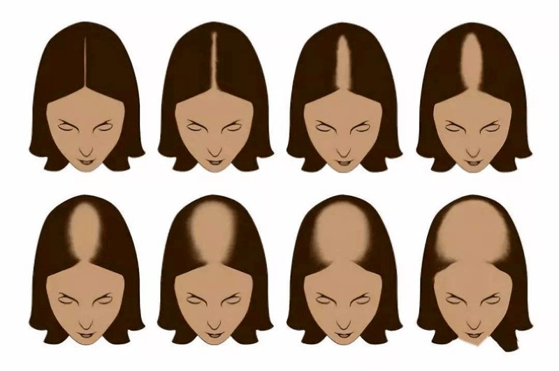
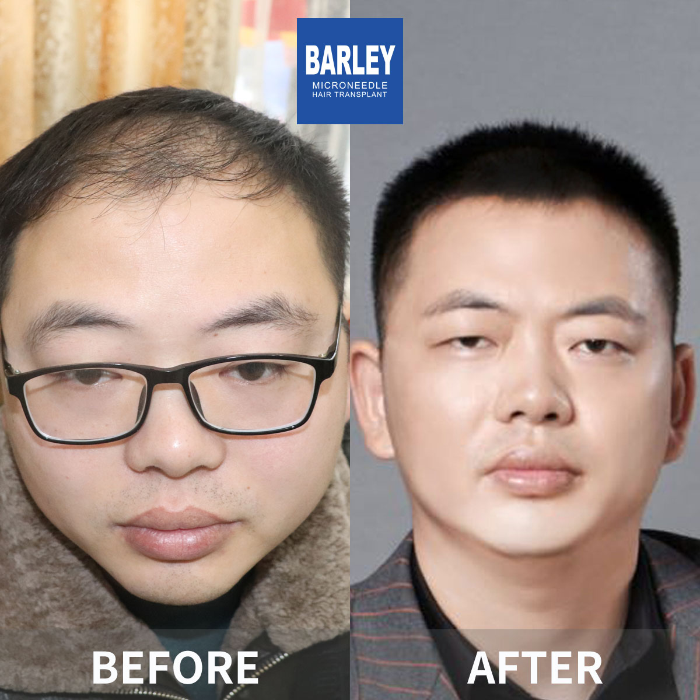

Understand your hair loss and find the right solution

Hair loss affects about 40% of women by age 50 and up to 50% by age 70. Female hair loss presents differently than in men, often as diffuse thinning rather than bald patches. The good news is that with early identification and proper treatment, women can effectively manage hair loss and maintain beautiful, healthy hair. This guide will help you understand your specific situation and find solutions that work.
Classify your hair loss severity and take the first step toward recovery
Early stage hair loss with minimal visible impact
Noticeable hair loss requiring intervention
Extensive hair loss requiring comprehensive management

Identify what type of hair loss you're experiencing
Understanding the root causes is the first step to effective treatment
Female pattern hair loss runs in families and is the most common cause
Hormonal fluctuations significantly impact hair growth cycles
Diet plays a crucial role in hair health and growth
Physical and emotional stress trigger hair shedding
Certain health issues directly affect hair growth
Hair naturally thins as we age due to follicle miniaturization
Practical solutions for every stage
Take these steps to address your hair loss
Determine your hair loss using Ludwig scale
Check for nutrient deficiencies & hormones
Begin with 2% topical application
Correct any identified deficiencies
Explore surgical options if needed
Track results and maintain health
Why our women's hair loss program delivers natural, beautiful results
Unlike many clinics, we understand female hair loss is different. Our assessment includes thorough medical workup, hormone evaluation, and understanding your unique goals and concerns.
Women's goals often differ — maintaining femininity, a natural hairline, and subtle density. Our physicians specialize in creating soft, natural hairlines and artistic placement for beautiful, undetectable results.
We understand female hair loss can be emotionally challenging. Our English-speaking female staff provides supportive, empathetic care throughout your journey, from consultation to post-procedure follow-up.
Industry leader with proven results
Pioneer and leader in microneedle hair transplant technology since 2006
Across major cities in China, all with the same high standards
Innovative microneedle and implant pen technology for superior results
Trusted by patients from around the globe for remarkable results
Full English support for international patients throughout treatment
State-of-the-art facilities and strict safety protocols for your peace of mind
See the amazing transformations our patients have achieved




Moments captured with our satisfied patients

Guide helped me so much

Much better now

Feeling wonderful

Right decision made

Improved hair health

Very pleased with result

Hair is looking great

Feeling confident now
Hear from our satisfied patients around the world
"I kept staring at my widening middle part every morning but had no name for it until this guide introduced me to the Ludwig scale. Turned out I was solidly Ludwig 1 — early enough that minoxidil 2% twice daily plus a topical anti-androgen spray stopped further widening within five months. I'm so grateful I didn't wait until it was obvious to everyone else. Early detection via the Ludwig scale literally saved my hair."
"After my twins were born, my hair started coming out in clumps around month four. I'd run my fingers through and get 30+ strands at once. This guide pointed out that ferritin (stored iron) crashes postpartum even if your serum iron looks normal. Barley ordered the right blood test, found my ferritin was only 9 ng/mL, and put me on heme iron plus vitamin C. Eleven months later, the post-pregnancy shed has completely reversed and my ponytail is thicker than before I was pregnant."
"I have PCOS and was absolutely convinced women like me couldn't get hair transplants — I'd read so many forums saying FUE was only for men. This guide clearly explained that female androgenic alopecia with stable Ludwig 2 pattern is a great candidate for mid-scalp density FUE. Barley did 1,800 grafts just in my part line last spring, and at month 10 I can wear my hair down without scalp powder for the first time in 12 years. I cried at my follow-up appointment — it's the most feminine I've felt in forever."
"Menopause hit me early at 49 and took my hair density with it. I didn't want oral HRT because of my family history, so Barley's guide laid out a non-surgical combination plan I could actually do: compounded topical minoxidil + micronized progesterone cream + PRP sessions every 3 months + magnesium glycinate at night. Six months in, my trichologist measured +18% in hair count at the crown. It's not magic, it's a stack — and it works."
"I had no idea my thyroid antibodies were eating my hair. For three years I kept blaming bad shampoo and hard water until this guide told me to ask specifically for TSH, free T3, free T4 AND thyroid peroxidase antibodies, not just the basic panel. Barley caught my Hashimoto's, referred me to an endocrinologist for levothyroxine, and paired it with topical minoxidil while the medication kicked in. I don't panic when I brush my hair anymore. That peace of mind is everything."
"I'm 28 and was pulling 12-hour audit weeks through January when I noticed my part line had literally doubled in width in two months. The Ludwig scale self-check in this guide put me at early Ludwig 1, and the stress section finally explained it — chronic cortisol raises DHT locally in the follicles. I booked Barley's early-intervention package, switched to 4-day work weeks, and started low-dose minoxidil nightly. Today, 8 months later, my part is back to normal and I actually look forward to washing my hair again."
Experience our modern and comfortable facilities

Our state-of-the-art facility

Relax in our premium lounge

Sterile and advanced

Private and professional

Comfortable post-op space

Welcoming entrance
Expert answers to the questions women ask most about hair thinning, causes, and treatment options
Click to copy contact information
15810155700
+86 13730143529
hairtransplant@qq.com

Everyone's hair loss journey and solution are unique due to a variety of factors. Our hair restoration experts will assist you in determining the root cause and the best solution for your hair restoration plan. If you have any questions, please ask; we are happy to assist.